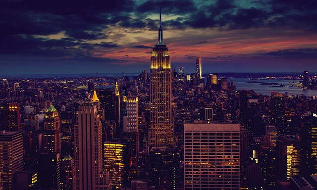
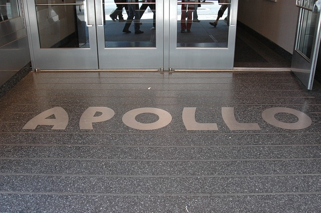

When people think of New York City, Manhattan is often the first place they picture. It's no wonder: the borough is home to big-name attractions, such as Central Park, the Empire State Building, St. Patrick's Cathedral, the High Line and One World Observatory; world-class museums, restaurants and concert halls; and the bright lights of Times Square and Broadway. But there's more to the borough than the obvious sights. Manhattan contains charming neighborhoods and hidden green spaces, trendy boutiques and classic bars. Read on and explore.
Central Park is the most visited urban park in the United States, with 40 million visitors in 2013, and
one of the most filmed locations in the world. The park was established in 1857 on 778 acres of city-owned land. In 1858, Frederick Law Olmsted and Calvert
Vaux, a landscape architect and an architect, respectively, won a design competition to improve and expand the park with a plan they titled the "Greensward Plan".
Construction began the same year and the park's first area was opened to the public in the winter of 1858. Construction continued during the American Civil War
farther north, and was expanded to its current size of 843 acres in 1873.
The 1960s marked the beginning of an "Events Era" in Central Park that reflected the widespread cultural and political trends of the period. The Public Theater's annual
Shakespeare in the Park festival was settled in the Delacorte Theater (1961), and summer performances were instituted on the Sheep Meadow, and then on the Great Lawn by
the New York Philharmonic Orchestra and the Metropolitan Opera. During the late 1960s the park became the venue for rallies and cultural events such as the "Love-ins"
and "Be-Ins" of the period. Increasingly through the 1970s, the park became a venue for events of unprecedented scale, including rallies, demonstrations, festivals,
and concerts. By the mid-1970s, however, managerial neglect was taking a toll on the park's condition.
"Years of poor management and inadequate maintenance had turned
a masterpiece of landscape architecture into a virtual dustbowl by day and a danger zone by night", in the opinion of Douglas Blonsky, a president of the Central Park
Conservancy. Vandalism, territorial use (e.g. a pick-up game of softball or association football, which commandeered open space and excluded others), and illicit activities
were taking place in the park. Several volunteer citizen groups emerged, intent upon reclaiming the park by fundraising and organizing volunteer initiatives. One of these
groups commissioned a study of the park's management. The study's conclusion was bi-linear; it called for establishment of a single position within the New York City Parks
Department, responsible for overseeing both the planning and management of Central Park, as well as a board of guardians to provide citizen oversight.
The Central Park Conservancy was founded the following year, to support the office and initiatives of the administrator.
Times Square stretches along Broadway and Seventh Avenue from West 42nd to West 47th Streets. Brightly adorned with billboards and advertisements, Times Square is sometimes referred to as "The Crossroads
of the World", "The Center of the Universe", "the heart of The Great White Way", and the "heart of the world". One of the world's busiest pedestrian areas, it is also the hub
of the Broadway Theater District and a major center of the world's entertainment industry. Times Square is one of the world's most visited tourist attractions, drawing an
estimated 50 million visitors annually. Approximately 330,000 people pass through Times Square daily, many of them tourists, while over 460,000 pedestrians walk through Times
Square on its busiest days.
The High Line (also known as High Line Park) is a 1.45-mile-long elevated linear park created on an elevated section of a disused New York Central Railroad spur called the West Side Line. Led by landscape architecture firm James Corner Field Operations, the design team reimagined the existing infrastructure as a "living system" that draws from multiple disciplines (including landscape architecture, urban design, and ecology) and has become an icon in contemporary landscape architecture. Inspired by the 3-mile-long Promenade plantée, a similar project in Paris completed in 1993, the High Line has been redesigned and planted as an aerial greenway and rails-to-trails park. Its success has pushed cities nationwide to reimagine obsolete infrastructure as public space. The High Line Park is built on the disused southern portion of the West Side Line running to the Lower West Side of Manhattan.

The Empire State Building is an American cultural icon. It is designed in the distinctive Art Deco style and has been named as one of the Seven Wonders of the Modern World by the
American Society of Civil Engineers. The Empire State Building is a 102-story skyscraper located on Fifth Avenue between West 33rd and 34th Streets. It has a roof height of 1,250
feet, and with its antenna included, it stands a total of 1,454 feet tall. Its name is derived from the nickname for New York, the Empire State. It stood as the world's tallest
building for nearly 40 years, from its completion in early 1931 until the topping out of the original World Trade Center's North Tower in late 1970.
Excavation of the site began on January 22, 1930, and construction on the building itself started on March 17—St. Patrick's Day—per Al Smith's influence as Empire State, Inc.
president. The project involved 3,400 workers, mostly immigrants from Europe, along with hundreds of Mohawk iron workers. The construction was part of an intense competition in
New York for the title of "world's tallest building". Two other projects fighting for the title, 40 Wall Street and the Chrysler Building, were still under construction when work
began on the Empire State Building. Each held the title for less than a year, as the Empire State Building surpassed them upon its completion, on April 11, 1931, 12 days ahead of
schedule. The building was officially opened on May 1, 1931 in dramatic fashion, when United States President Herbert Hoover turned on the building's lights with the push of a
button from Washington, D.C. The Empire State Building has 73 elevators in all, including service elevators. It takes less than one minute by elevator to get to the 80th floor,
which contains a gift shop and an exhibit detailing the building's construction.
Since the 1920s, Harlem has been known as a major African-American residential, cultural and business center. Originally a Dutch village, formally organized in 1658, it is named after the city of Haarlem in the Netherlands. Harlem's history has been defined by a series of economic boom-and-bust cycles, with significant population shifts accompanying each cycle. Following the Civil War, poor Jews and poor Italians were the predominant demographic in Harlem. African-American residents began to arrive in large numbers in 1905 as part of the Great Migration. In the 1920s and 1930s, Central and West Harlem were the focus of the "Harlem Renaissance", an outpouring of artistic work without precedent in the American black community. However, with job losses in the time of the Great Depression and the deindustrialization of New York City after World War II, rates of crime and poverty increased significantly. Harlem's African-American population peaked in the 1950s. In the second half of the 20th century, Harlem became a major hub of African-American businesses.
